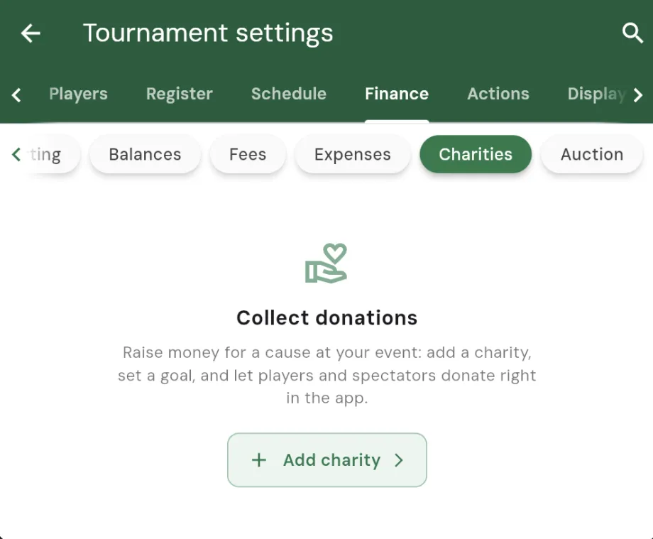
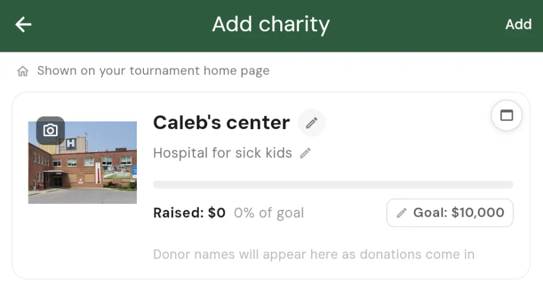
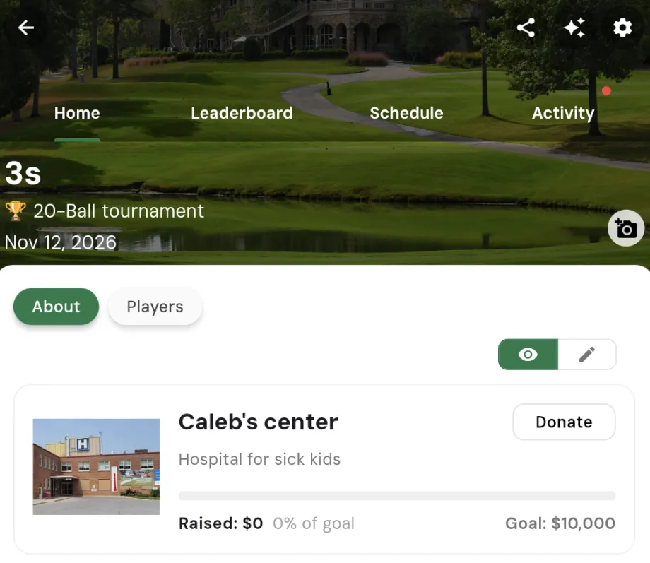
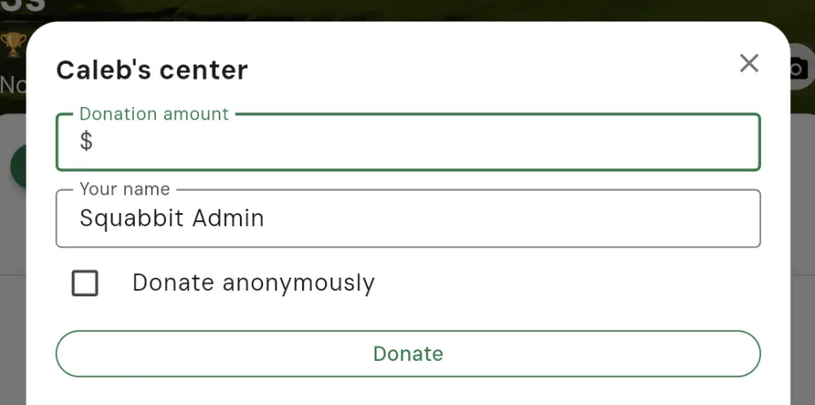

Running a Charity Fundraiser
A charity fundraiser turns any Squabbit event into a chance to raise money for a good cause. Set up a charity, give it a goal, and Squabbit shows a donation card right on your home page. Members and spectators can chip in from their phones, you watch the total climb toward your goal, and the money goes straight to you through Stripe. This works in tournaments, leagues, and clubs, and it sets up the same way in each.
Where to set it up
Charity fundraisers are managed from your group’s finance settings. Open your tournament, league, or club settings, go to the section, and you’ll find everything for the fundraiser there. Because it lives on the group itself, the steps are identical whether you’re running a one-day tournament, a season-long league, or a club.
If you haven’t set one up yet, the Charities section shows a short intro and an Add charity button to get started.

Setting up a charity
Tap Add charity to open the charity editor. The editor is a live preview of the exact donation card your members will see, and each part of it is tap-to-edit, so what you set up is what shows up. Tap any part of the card to fill it in:
- Name: who you’re raising money for. This is the only required field.
- Description: an optional line or two about the cause, so donors know where their money is going.
- Goal: an optional fundraising target. Set one and the card shows a progress bar that fills as donations come in. Leave it unset and the card just shows the running total raised.
- Image: an optional banner or logo for the charity. You can place it above the text or alongside it using the layout toggle on the card.

When you’re creating a new charity, tap Add at the top to save it. For a charity you’ve already created, there’s nothing extra to save: your edits are kept automatically when you back out. You can come back and change any of these at any time, or remove the charity entirely with the Delete charity option.
The Donations home widget
As soon as you add a charity, Squabbit automatically places a Donations widget at the top of your group’s Home tab. There’s nothing extra to turn on. The widget is the donation card everyone sees, and it shows:
- The charity name, and its description and image if you added them.
- A progress bar (when you’ve set a goal) toward your target.
- The total amount raised so far, the percentage of your goal reached, and the goal itself.
- A lane of recent donors, so contributions are visible as they land.
- A Donate button.

The progress bar fills as confirmed donations add up, and once you pass your goal it simply stays full while the total keeps climbing. Anyone who can see your home page can donate, including spectators who aren’t members of the event, so you can open it up to a whole gala room, not just the players.
How people donate
When someone taps Donate, a simple sheet slides up where they enter their donation. They fill in:
- Amount: how much they’d like to give, in your group’s currency.
- Name: shown next to their donation. It’s pre-filled with their name if they’re signed in.
- Donate anonymously: a toggle to keep their name off the public donor list. They’ll show as “Anonymous” instead.

Tapping Donate takes them to Stripe’s secure checkout to pay by card. Once the payment clears, their donation is added to the total, usually within a few moments, and they get a quick thank-you. Donations go to your connected Stripe account, and you receive the full amount you were pledged.
You’ll need Stripe connected
Because donors pay by card, collecting donations requires a connected Stripe account on your event. If you haven’t connected one, the Charities section shows a notice that donations can’t be collected yet, with a shortcut to set up a payment method. Until Stripe is connected, the Donate button lets people know the host still needs to connect Stripe before they can give.
Viewing donations received
To see what’s come in, open your charity again from and switch to the Donations view. You’ll see the total raised and the number of donations at the top, followed by a list of every donation, newest first. Each row shows the donor’s name (or “Anonymous” when they chose to hide it), the date, and the amount. For reconciling with your Stripe dashboard, each donation also carries its Stripe transaction id, which you can tap to copy.
That’s it!
Add a charity from your Finance › Charities settings, give it a name and an optional goal and image, and the Donations widget lands on your home page automatically. Make sure Stripe is connected, and your members and spectators can donate by card in a couple of taps. Watch the total climb, and check the Donations view any time to see who gave. If you get stuck or want to suggest an improvement, use the Help menu in the app.